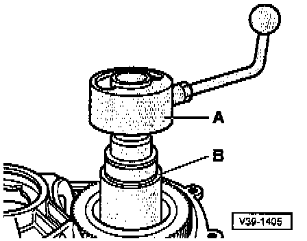

Drive Pinion
CONDITIONS:- Supporting ring for drive pinion bearing is installed and secured.
- Parking lock mechanism and parking lock gear are installed.
ADJUSTING:

- Place two shims (each 1.5 mm thick) -arrow- onto the drive pinion.
- Place output gear with tapered roller bearing onto drive pinion and tighten hex nut (41 mm AF) to 250 Nm (184 ft lb)
- Engage parking lock when performing this step

- Insert dial gauge -A- and zero with a preload of 1 mm.
Moving drive pinion up and down, read and record play at dial gauge (example 0.93 mm).
NOTE: Do not rotate the drive pinion while making this measurement as the bearings will otherwise settle and falsify the result of the measurement.
DETERMINING SHIM THICKNESS
- The specified bearing preload is achieved if the reading (example: 0.93 mm), the specified bearing preload (0.12 mm) and the amount allowed for compression (0.10 mm) are deducted from the 2 x 1.5 mm thick shims.
Example:
Shims installed minus Reading minus Preload minus Amount for compression equals Thickness of shim
3.00 mm - 0.93 mm - 0.12 mm - 0.10 mm = 1.85 mm
- Remove output gear. Determine correct shim size from table below and install shim on drive pinion.
Shim Table For Drive Pinion Adjustment:

- Re-install output gear, tighten hex nut to 250 Nm (184 ft lb), and secure with drift.

FRICTION TORQUE, CHECKING
- A -Torque gauge, commercially available, 0 - 600 Nm (0 - 50 inch lb)
- B - Socket (41 mm AF)
- Oil bearing beforehand with gear oil.
- The friction torque of new tapered roller bearings must be 80-120 Nm (7- 11 inch lb).